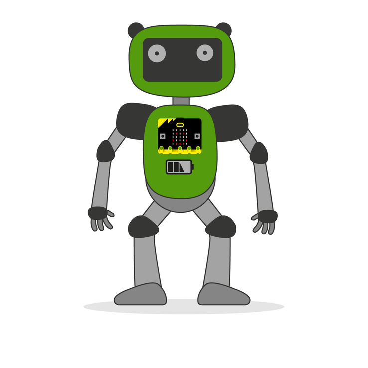

|  |
Llega el momento de mostrar lo que has estado haciendo. Muestra tu asistente a la clase para ponerlo a prueba. |
BIENVENIDOS AL FUTURO (Comprendiendo la IA) CyR 1º ESO
Muestra tu Asistente a la clase
Tarea: La réplica perfecta
- Duración:
- 4 sesiones
- Agrupamiento:
- Individual o por parejas
Guarda los archivos, entrégalos a tu profe y pídele que lo muestre a la clase para ponerlo a prueba con tus compañeros y compañeras.
Diario de Aprendizaje
No olvides contar tu experiencia en la ficha correspondiente de tu Diario de Aprendizaje
Obra publicada con Licencia Creative Commons Reconocimiento Compartir igual 4.0